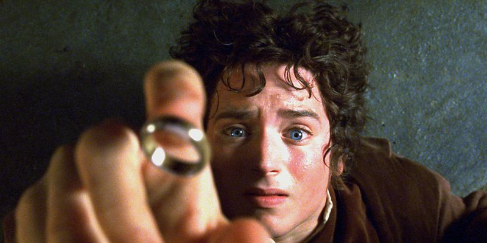
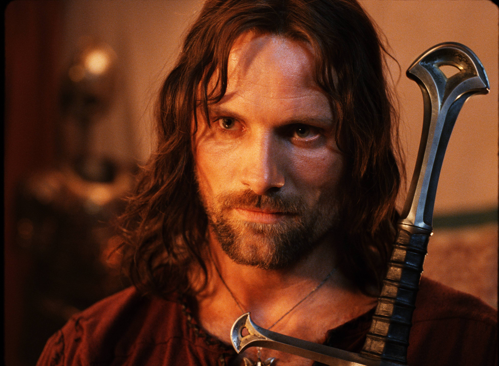

Elijah Wood is an American actor best known for portraying Frodo Baggins in Peter Jackson's blockbuster Lord of the Rings film trilogy. In addition to reprising the role in The Hobbit series, Wood also played Ryan in the FX television comedy Wilfred (2011) and voiced Beck in the Disney XD animated television series TRON: Uprising (2012).
Born: January 28, 1981 in Cedar Rapids, Iowa, USA

Widely regarded as one of greatest stage and screen actors both in his native Great Britain and internationally, twice nominated for the Oscar and recipient of every major theatrical award in the UK and US, Ian Murray McKellen was born on May 25, 1939 in Burnley, Lancashire, England, to Margery Lois (Sutcliffe) and Denis Murray McKellen, a civil ...
ince his screen debut as a young Amish farmer in Peter Weir's Witness (1985), Viggo Mortensen's career has been marked by a steady string of well-rounded performances. Mortensen was born in New York City, to Grace Gamble (Atkinson) and Viggo Peter Mortensen, Sr. His father was Danish, his mother was American, and his maternal grandfather was ...
